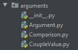
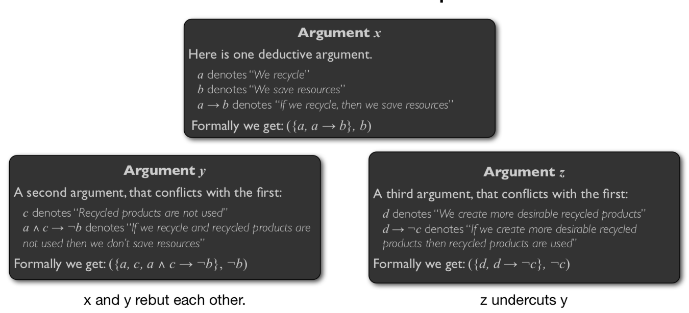

5.1. Remember¶
In the last session, we started the discussion about an argumentation-based negotiation agent (see figure below).
{kind=link}
In this session we will pursue the discussion and address more precisely what do we mean by arguing and argumentation.
5.2. Introduction to Argumentation Theory¶
Reasoning is generally defeasible, i.e. based on assumptions, exceptions, uncertainty, etc. AI formalises such reasoning with **non-monotonic reasoning logics**. The idea is that often available knowledge is incomplete, and to model commonsense reasoning it is necessary to be able to jump to plausible conclusions from the given knowledge. Thus, to do that it is necessary to make assumptions. The choice of assumptions is not blind: most of the knowledge on the world is given by means of general rules which specify typical properties of objects.
Non-monotonic reasoning deals with problem of deriving plausible conclusion, but not infallible, from a knowledge base (a set of formulas). Since the conclusion are not certain, it must be possible to retract some of them if new information shows that they are wrong. Classical logic is inadequate since it is monotonic, which means that if a formula \(B\) is derivable from a set of formulas \(S\), then \(B\) is also derivable from any superset of \(S\)
Example 1 (Reiter, 1987)
Birds fly,
Tweety is a Birds,
Therefore, Tweety flies.
But what if tweety is a penguin, type of bird that does not fly, is added to the knowledge base (KB)?
By adding this information to the KB, we have good reasons to retract the previous inference and instead, the new conclusion that Tweety does not fly will hold. However, this is not possible with the classical logic (the three sentences in the premises are true so the derived conclusion is true).
One way to do this is to say, ‘’Normally, birds fly’’ or ‘’ if \(x\) is a typical bird, then we can assume by default that \(x\) flies ‘’. This can be read as: “in the absence of information to the contrary, assume that \(x\) flies”
Argumentation logics formalises such defeasible reasoning as construction and comparison of arguments. In other terms, Argumentation is the process of attempting to agree about what to believe or what to do 1. We use argumentation only when information, beliefs, actions, … are contradictory. It means if eveyrhting is consistent, just merge information from multiple agents. In other terms, the process offers sensible rules for deciding what to believe or what to do in the face of inconsistency. We find argumentation, for instance, in : consumer websites (Amazon for instance), law (policy making, supreme transcript, case based reasoning,…), mediacal diagnosis, social media, etc. Thus, argumentation-based approaches are suited for applications in which agents have incomplete or inconsistent information about each other and the environment in which they act.
Several works were interested by using argumentation in different fields, such as legal reasoning, multi-agent systems, decision making, etc. [Prakken and Sartor, 2002; Amgoud and Cayrol, 2002; Benferhat et al., 1993; Parsons and McBurney, 2003]. In most of such approaches, arguments are constructed from an inconsistent knowledge base where the knowledge base is a set of propositions represented in some formal logics (classical or non-monotonic). In this case, argumentation can be viewed as a method for deducing justified conclusion from an inconsistent knowledge base. Which conclusion are justified depends on the attack and the defeat relations among the arguments which can be constructed from the knowledge base.
The classical steps in an argumentation process are depticted in the following figure.
{kind=link}
It includes:
1- Constructing arguments in favor/against statements (pertaining to beliefs or decisions) (see section Modelling arguments),
2- Defining relations among arguments: it may include differents tasks. Such as: evaluating the strength of each argument, determining the different conflicts among arguments, etc (see Sections selecting arguments and evaluating arguments).
3- Evaluating the acceptability of arguments (see section status of arguments), and
4- Comparing decisions on the basis of relevant “accepted” arguments (see next course/session).
In the following, we will detail what do we mean by an argument, an attack relation and how the arguments are used within a negotiation process.
1. Modelling arguments¶
In this section we are interested by the the first step of an argumentation process, i.e. the construction of arguments in favor or against a statement (we recall that for our purpose the statements correspnds to a decision/option). This step corresponds also to the box “agument generation” of our ABN agent (see Figure above).
The main challenge in this step is to determine the form or the structure of the arguments. Indeed, there are many ways to address the form of an argument: as trees of inferences (Karacapilidis and Papadias, 1998), as a sequences of inferences (deductions) (Verheij, 1996 ), or as simple premiss-conclusion pairs. The different forms of arguments depend on the language and on the rules for constructing them. The choice between the different options depends on the context and the objective sought through the use of argumentation.
In this course, we will adopt the premiss-conclusion pair as a structure of an argument, which is defined as follows:
Definition 1 (An argument)
Let \(\Sigma\) be a propositional knowledge base. An argument \(A\) is a pair \((\Phi,\alpha)\) such that: (1) \(\Phi \subset \Sigma\) , (2) \(\Phi\) is consistent (i.e. if there is no formula \(\phi\) such that \(\Phi \vdash \phi\) and \(\Phi \vdash \neg \phi\) ), (3) \(\Phi \vdash \alpha\) and (4) \(\Phi\) is minimal (for set inclusion) satisfying 1, 2 and 3. We call \(\Phi\): premises (supports) and \(\alpha\) : the conclusion (consequence).
Example 2
A murder has been performed and the suspects are Liz, Mary and Peter. The following pieces of information have been gathered:
The type of murder suggests us that the killer is a female;
The killer is certainly small;
Liz is tall and Mary and Peter are small.
The killer has long hair and uses a lipstick;
A witness claims that he saw the killer who was tall;
We are told that the witness is short-sighted, so he is no more reliable.
We can encode the previsous statements as the following:
\(s\) (the killer is small);
\(f\) (the killer is a female);
\(m\) (the killer is Mary);
\(l\) (the killer has long hair and uses a lipstick);
\(w\) (the witness is reliable);
\(b\) (the witness is short-sighted).
Thus we can construct the following arguments:
\(A_1 :\, <\{s,f,s \wedge f\rightarrow m\}, m>\) (in favour of \(m\));
\(A_2 :\, <\{w, w \rightarrow\neg s\}, \neg s>\) (in favour of \(\neg s\));
\(A_3 :\, <\{b,b \rightarrow\neg w\},\neg w>\) (in favour of \(\neg w\));
\(A_4 :\, <\{l,l \rightarrow f\},f>\) (in favour of \(f\)).
\(\rightarrow\) Who is the killer? …Wait, the answer is soon :-)
Let’s go back to our Engine choice: Generating arguments.¶
At the core of the dialogue between our three agents, the performative ARGUE (you need to check that this performative is present in our MessagePerformative.py). It is used to explain to the other party in the dialogue the reasons in favor or against a given item. As it was mentionned in the course the idea is to communicate a logical inference that defends the agent’s position. As a consequence, the content of such a message is of the form: \(B \leftarrow A\), such that the terms of \(A\) are the premises and \(B\) a positive or negative literal, which is the conclusion.
Example 3
An agent explains that it is in favor of Fuell Cell (FC) because it respects the environment. It can be encoded as follows:
\[FC \leftarrow ecology\_impact = Very \, Good.\]
Thus, the two components of the argument are as follows:
1- Premises: we will limit ourselves to two types of propositions:
The value of a criterion \(C_i\) is \(x\). This is a know fact for both agents, but using it in an ARGUE message simply asserts that this information can be used by the sender to infer a position in favor or against the item. In our communciation model we shall write \(C_i = x\).
The Criterion \(C_i\) is prefered to the criterion \(C_j\) . This Information is local to the sender agent. It does not necessary hold for the receiver. However, using it in an ARGUE message informs the receiver about the sender’s preference. In our communciation model, we shall write \(C_i \succ C_j\).
Those two possible types of propositions can be combined in the same message. Thus, when several premises are used, they are separated by a comma.
Example 4
ARGUE (not FC because Cost = Very Good, Cost \(\succ\) CO2 emission)
2- Conclusion: it must be the name of an item, preceded by the operator “not” when the inference is against the item.
Warning
To generate arguments or to make a logical inference, each agent needs to have a knowledge base (KB), which contains different information, facts, domain knowledge… Due to time limitation, we restrict this base to the agent’s preferences represented by the performance table (see previous session). This is clearly not sufficient to build diffrent kinds of arguments. Moreover, each time an agent receives an argument, he is able to update this knowledge base to enrich his information and to update his behavior and reasoning according to the new information. Again, this is not taken into account in this practical work in order to ease the programming and this is also due to time limitation and .
Recall of the example¶
Let consider three agents: Agent1, Agent 2 and Agent3. They have to select only one item between the ICE Diesel (ICED) engine and the Electric (E) one: there is only room left for one of them. The agents consider five different criteria: \(C_1\) : Cost (of production), \(C_2\): Consumption, \(C_3\): durability, \(C_4\): Environment impact, \(C_5\): Degree of Noise. Moreover, each agent has it own evaluation table for the items. For instance, the following performance table corresponds to Agent1.
\(C_1 \downarrow\) |
\(C_2 \downarrow\) |
\(C_3 \uparrow\) |
\(C_4 \downarrow\) |
\(C_5 \downarrow\) |
|
|---|---|---|---|---|---|
ICED |
Very Good |
Good |
Very Good |
Very Bad |
Very Bad |
E |
Bad |
Very Bad |
Good |
Very Good |
Very Good |
The scale for each criterion ranges from Very Bad to Very Good. The majority of criteria are to be minimized \(\downarrow\) (the lower the better) except \(C_3\) which is to be maximized \(\uparrow\). Morever, agents have different order of preferences among the criteria themselves (total order in our example):
Agent1 : Cost \(\succ\) Environment Impact \(\succ\) Consumption \(\succ\) durability \(\succ\) Noise
Agent2 : Environment Impact \(\succ\) Noise \(\succ\) Cost \(\succ\) Consumption \(\succ\) durability
Agent3 : Durability \(\succ\) Environment Impact \(\succ\) Noise \(\succ\) Consumption \(\succ\) cost
Questions¶
1- In your folder you should have the package arguments as it is depicted in the following picture. This package contains three classes. If this is not the case, you can download it here.
{kind=link}
2- In the class \(\texttt{Comparison}\) implement the comparison object used in an argument object (\(C_i \succ C_j\) ).
#!/usr/bin/env python3
class Comparison:
"""Comparison class.
This class implements a comparison object used in argument object.
attr:
best_criterion_name:
worst_criterion_name:
"""
def __init__(self, best_criterion_name, worst_criterion_name):
"""Creates a new comparison.
"""
# To be completed
3- In the class \(\texttt{CoupleValue}\) implement the couple value used in an argument object (\(C_i = x\)).
#!/usr/bin/env python3
class CoupleValue:
"""CoupleValue class.
This class implements a couple value used in argument object.
attr:
criterion_name:
value:
"""
def __init__(self, criterion_name, value):
"""Creates a new couple value.
"""
# To be completed
4- In the class \(\texttt{Argument}\) implement an argument that consists of a tuple with:
The item name;
A boolean value (for positive or nagtive arguments)
A list of couples taht can be either (crtierion, value) and/or (criterion, criterion)
#!/usr/bin/env python3
from arguments.Comparison import Comparison
from arguments.CoupleValue import CoupleValue
class Argument:
"""Argument class.
This class implements an argument used in the negotiation.
attr:
decision:
item:
comparison_list:
couple_values_list:
"""
def __init__(self, boolean_decision, item):
"""Creates a new Argument.
"""
#To be completed
def add_premiss_comparison(self, criterion_name_1, criterion_name_2):
"""Adds a premiss comparison in the comparison list.
"""
# To be completed
def add_premiss_couple_values(self, criterion_name, value):
"""Add a premiss couple values in the couple values list.
"""
# To be completed
5- Write a method that constructs the list of positive arguments for a proposal (an item). In our context, positive arguments will correspond to the ones for which criteria have either GOOD or VERY GOOD values for the item (see Value class in preferences implemented during the previsous session).
def List_supporting_proposal(self, item):
"""Generate a list of arguments which can be used to support an item
:param item: Item - name of the item
:return: list of all arguments PRO an item (sorted by order of importance based on agent's preferences)
"""
# To be completed
6- Write a method that constructs the list of negative arguments against an item. They will correspond to the ones for which criteria’a values are either Bad or Very Bad.
def List_attacking_proposal(self, item):
"""Generate a list of arguments which can be used to attack an item
:param item: Item - name of the item
:return: list of all arguments CON an item (sorted by order of importance based on preferences)
"""
# To be completed
Warning
Recall an argument is composed of a conclusion and a set of premisses, and we have two types of premisses.
2. Selecting Arguments¶
As it is mentionned in the figure above antoher component in our ABN agent is the argument selection. The question is: given a number of candidate arguments that an agent may utter to its counterpart, which is the “best” argument from the point of view of the speaker?
Different stategies are possible. Just for illustration, in the work of (Kraus et al., 1998), arguments are selected according to the following argument strength order, with threats being the strongest argument. (1) Appeal to prevailing practice, (2) A counter example, (3) An appeal to past promise, (4) A promise to self-interested, (5) A promise of future reward, and (6) A threat.
Suitable argument selection in a negotiation context must take into account information about the negotiation counterpart. To this end, for instance is Bayesian game theory a counterpart is modelled by a probability distribution representing the uncertainty of the first party regarding the counterparts’ initial information and the payoffs they receive from the different outcomes (i.e. action profiles). This raises the opportunity to use learning techniques in order to find patterns in the counterpart’s behaviour an use these findings in future encounters with the same (or similar) counterpart(s) (see for e.g. Sandholm and Crites, 1995).
This is a particularly challenging task for ABN since agent may not only model the observed “beheviour” of one another, but also the “mental attitudes” motivating that behaviour.
Note
Instead what we are doing here, argument selection may take place in conjunction with argument generation. An agent need not to generate all possible arguments before it makes a selection of the most suitable one.
Questions¶
For our context, to select which argument to use, we choose a simple way which is: an agent takes the argument with the criterion with the highest position in its own preference order (you may choose another stratgy if you want!). For instance, Agent1 (see its perfomance table above) has four positive arguments for the item ICED. To make a propsal, according to our rule, he will choose the argument involving Cost as it is its perefered criterion.
Consider now the following interaction:
Agent1 to Agent2: PROPOSE(item)
Agent2 to Agent1: ASK_WHY(item)
Agent1 to Agent2: ARGUE(item, premisses)
For the last turn the agent will use its “best” argument from its list of positive arguments (see previous question 5).
1- Write a method that allows an agent to select among a list of arguments its “best” one (according to our rule or your own rule) to support a given proposal.
def support_proposal(self, item):
"""
Used when the agent recieves "ASK_WHY" after having proposed an item
:param item: str - name of the item which was proposed
:return: string - the strongest supportive argument
"""
# To be completed
2- Update and test the interaction protocol to implement the situation above.
3. Relations among arguments.¶
Once the arguments constructed, they cannot be considered independently. Indeed, most of the arguments are in interaction: arguments may be conflicting or on the contrary, arguments may support other arguments. (Pollock, 1995 ) drew an important distinction between two kinds of arguments that can attack and defeat another argument, calling them rebutting defeaters and undercutting defeaters.
A rebutting attack concerns arguments that have contradictory conclusions. Let \(\equiv\) represents the equivalence relation in classical logic, and \(\neg\) the negation. Then formally,
- Defintion 2 (Rebut attack)
Given two arguments 2 \((\phi_1, \alpha_1)\) and \((\phi_2, \alpha_2)\) , \((\phi_1, \alpha_1)\) rebuts \((\phi_2, \alpha_2)\) if and and only if \(\alpha_1 \equiv \neg \alpha_2\)
An undercutting defeater has a different claim. It attacks the inferential link between the conclusion and the premise rather than attacking the conclusion. In other words, we are in presence of undercutting when one argument challenges a rule inference of another argument. Formally,
- Defintion 3 (Undercut attack)
Given two arguments \((\phi_1, \alpha_1)\) and \((\phi_2, \alpha_2)\) , \((\phi_1, \alpha_1)\) undercuts \((\phi_2, \alpha_2)\) if and and only if \(\exists \alpha \in \phi_2\) such that \(\alpha_1 \equiv \neg \alpha\)
Example 4
{kind=link}
Moreover, let us remark that both types of defeaters, discussed above, represent negative relations between arguments. However, recent studies have proposed another kind of relation between argument, namely a positive relation, called support relation [Verheij, 2002; Amgoud et al., 2004; Karacapilidis and Papadias, 1998a]. Indeed, an argument can defeat another argument, but it can also support another one. This new relation is completely independent of the attack relation (i.e., the support relation is not defined in terms of the attack relation, and vice-versa). As it was pointed by [Cayrol and Schiex, 2005]:
“This suggests a notion of bipolarity, i.e. the existence of two independent types of information which have a diametrically opposed nature and which represent contrasting forces”
Example 5
Consider again the arguments of the murder example.
\(A_1 :\, <\{s,f,s \wedge f\rightarrow m\}, m>\) (in favour of \(m\));
\(A_2 :\, <\{w, w \rightarrow\neg s\}, \neg s>\) (in favour of \(\neg s\));
\(A_3 :\, <\{b,b \rightarrow\neg w\},\neg w>\) (in favour of \(\neg w\));
\(A_4 :\, <\{l,l \rightarrow f\},f>\) (in favour of \(f\)).
Relations:
\(A_3\) defends \(A_1\) against \(A_2\)
\(A_4\) confirms the premiss of \(A_1\) thus, \(A_4\) supports \(A_1\)
Thus, as it is represented in the argumentation process (see Figure above), once you have identified your arguments, you need to define the relations among those arguments. Moreover, at the end, given the set of arguments and their attack relations, we can construt a graph such that nodes represent the arguments and the edges the relations between the arguments.
Example 6
The following figure represents a graph where we have 5 arguments (each color represent an argument) and 4 attack relations (represented bu the red dashed lines). Note that the black lines inside a color represent the logical inference of an argument from the premises to the conclusion.
{kind=link}
More generally, the arguments and their relation can be represented by what we call “abstract argumentation system”. For our previsous example we may have the following:
Example 7
{kind=link}
More formally, we define an argumentation framework or system as follows:
Definition 4 (Argumentation System)
an argumentation system is a pair \(\langle \mathcal{A}, \mathcal{R} \rangle\), where: \(\mathcal{A}\) is a set of arguments and \(\mathcal{R} \subset \mathcal{A} \times \mathcal{A}\) : an attack relation among arguments.
Now, the key question to ask about such an argumentation framework is whether a given argument, \(x \in \mathcal{A}\), should be accepted?
Before to go furthere, let us consider again our deicison problem about engine choice and let’s build a system for generating arguments for our negotiation.
Questions¶
1- Write a method that take as input an argument and recovers its premises and its conclusion.
def argument_parsing(self, argument):
""" returns ....
:param argument:
:return:
"""
# To be completed
2- Write a method that decides whether an argument can be attacked or not. In our context the agent can attack or contradict an argument provided by another agent if:
The criterion is not important for him (regarding his order)
Its local value for the item is lower than the one of the other agent on the considered criteria
He prefers another item and he can defend it by an argument with a better value on the same criterion.
etc.
Warning
Of course, once it is decided that the agument can be contradicted, you need to construct its counter-arguement (or to select it in your list of counter-arguments–see question 6 in section “Modelling arguments”).
def TODO(self, argument):
# To be completed
Example 8
Agent1 to Agent2: argue(ICED, Consumption = good)
Agent 2 may reply by:
argue (not ICED, environment impact > Consumption )
argue (item, Consumption= very good)
argue (not ICED, Consumption = bad)
argue (note ICED, nvironment impact =Bad and nvironment impact > Consumption)
3- Update the interaction protocol to take into account the attack function and to implement the following situation:
Agent1 to Agent2: PROPOSE(item)
Agent2 to Agent1: ASK_WHY(item)
Agent1 to Agent2: ARGUE(item, premisses)
Agent2 to Agent1: reply with one of the previous counter-arguement –> ARGUE(not item, prmisses) or ARGUE (new item, premisses)
4- In addition, at each ARGUE message, store in a data structure the set of exchanged arguments, such that it is possible to extract for each argument its set of counter-arguments.
4. Status of arguments?¶
. Indeed, an argumentation frameworks encodes, through the attack relations, the existing conflicts within a set of arguments. A formal method to identify conflicts outcomes (i.e. determine which arguments should be accepted) for any argumentation framework is called argumentation semantics. Two mains approaches to the definition of argumentation semantics:
The labelling-based approach. The idea is to assign to each arguemnt a lable (a tag) according
The extension-based approach